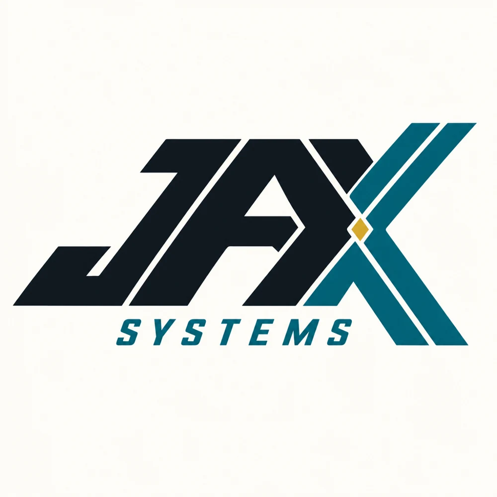
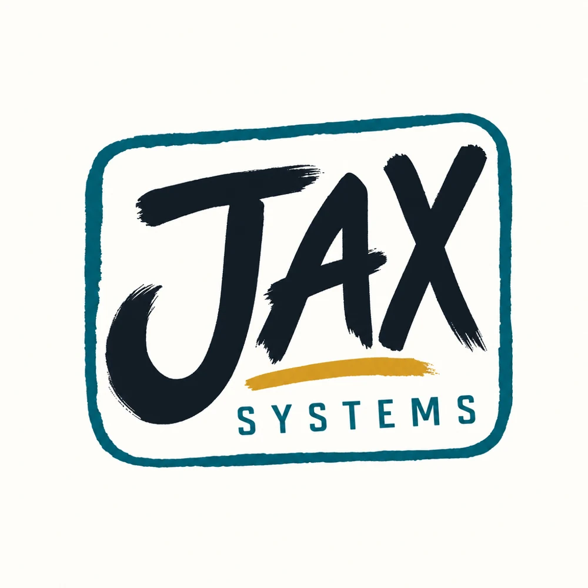
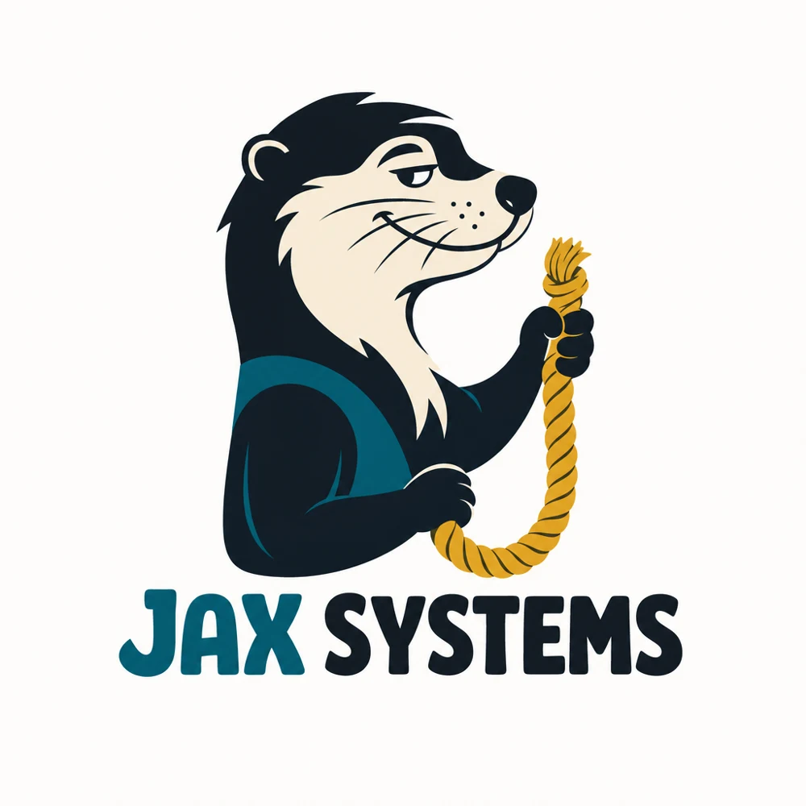
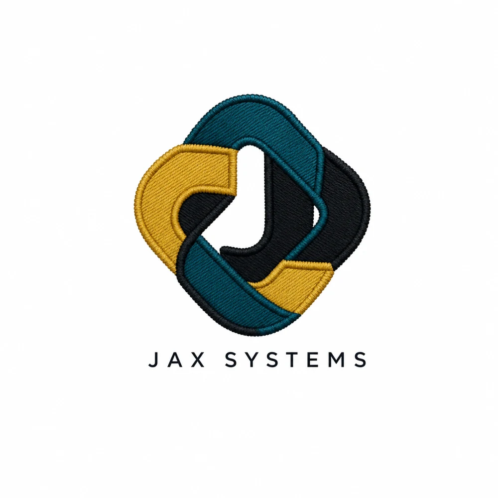
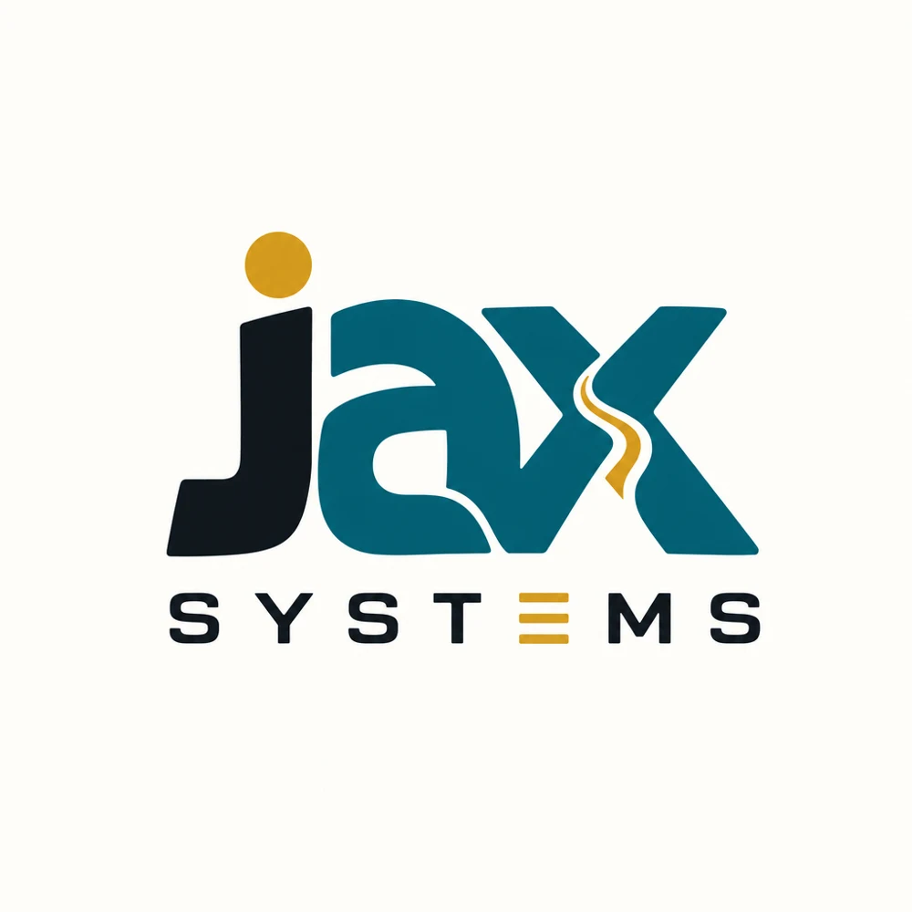
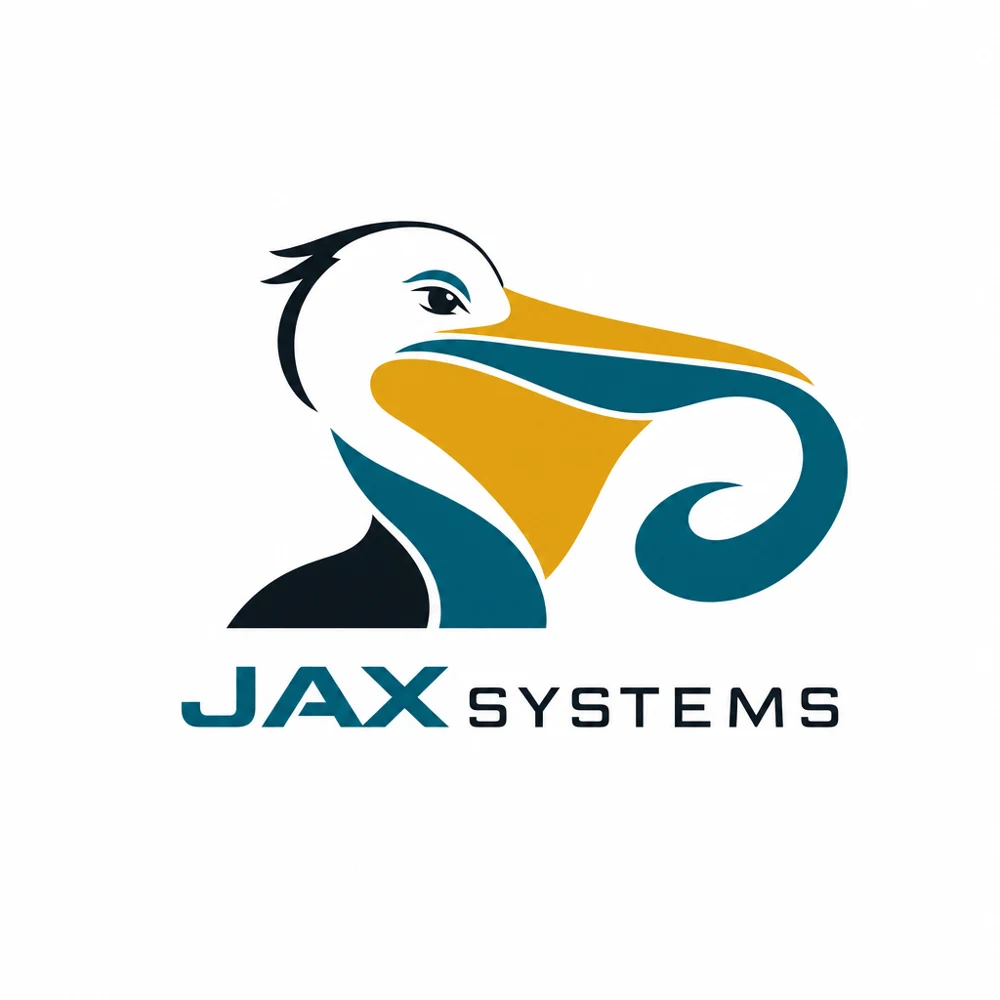
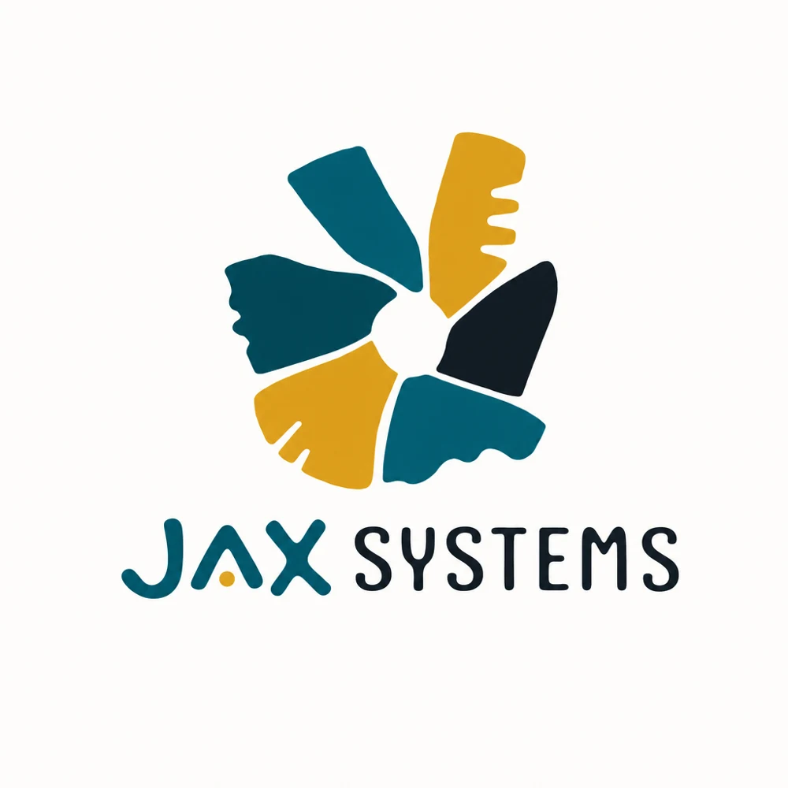
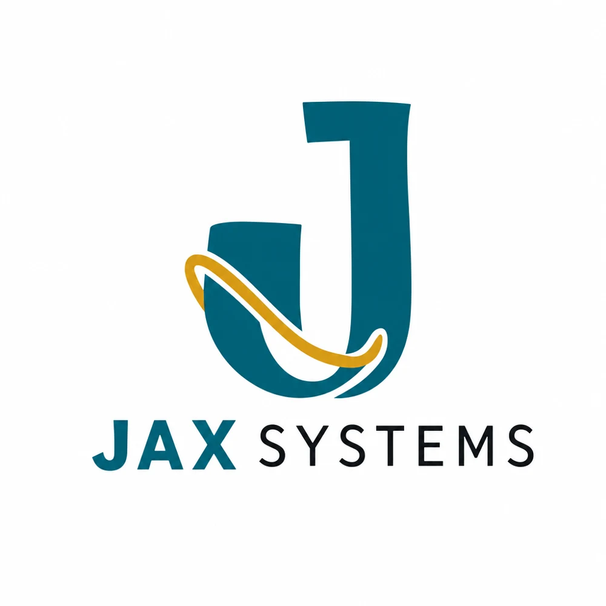
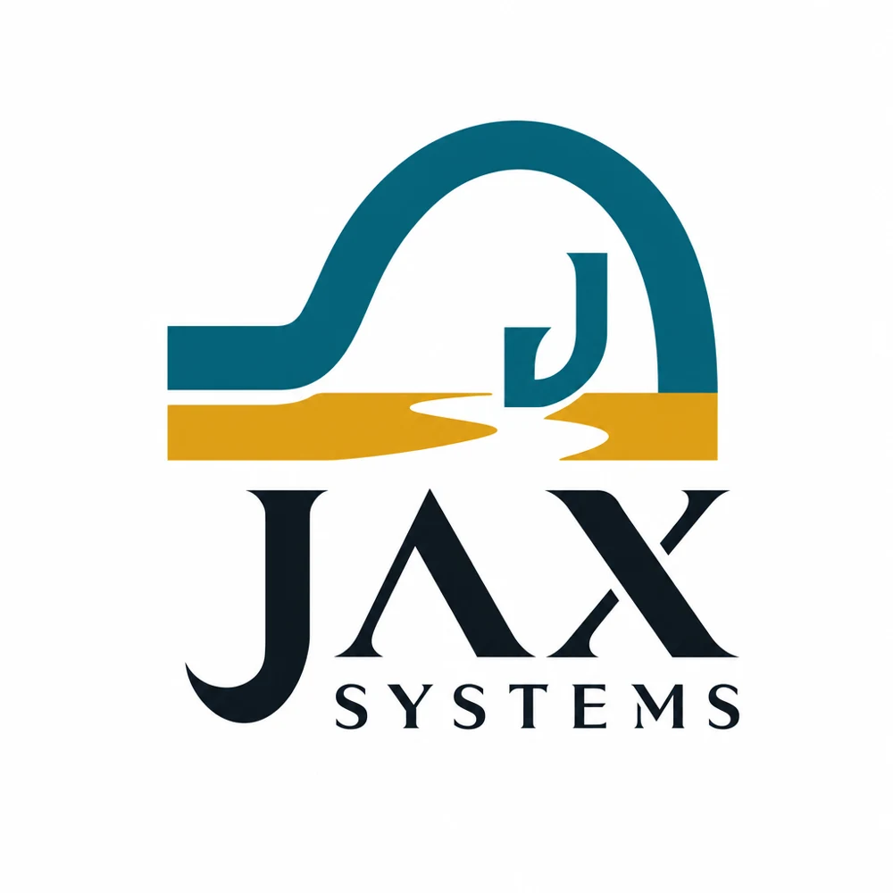

DIRECTION 01
Fast & bold
An angled custom wordmark with a more athletic, forward-leaning personality.
The first 50 leaned too heavily on generic geometric icons. These nine explore different personalities: custom type, a patch, a mascot and more expressive marks. None is selected.
These are AI-generated raster concept sketches, not finished vector or embroidery artwork. Kimi helped explore directions; GPT Image 2 rendered these previews. Trademark and production review remain open.

An angled custom wordmark with a more athletic, forward-leaning personality.

A hand-lettered patch direction with a neighborhood-shop feel.

A character-led idea: an otter gathering a loose end.

An intertwined J meant to suggest loose ends coming together.

A chunky, approachable typographic direction.

A local bird and a flowing shape, with a bolder mascot feel.

An abstract collection of pieces forming a single mark.

A simple J wrapped with a flowing gold line.

A bridge-inspired symbol paired with a more formal wordmark.
No favorites yet. Select Shortlist on a direction.
Choose the personality first. Then develop and refine more logos in that direction.
← View original 50